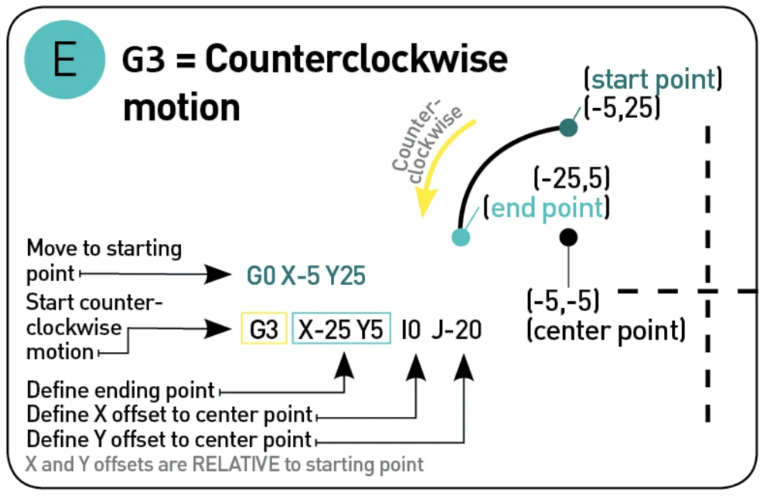

G-code
What are G-code Commands?¶
G-code stands for "Geometric code", it is a rudimentary programing language, a numerical control programing language, that lacks of data structure such as variable, control blocks as conditionals and loops, its main function is to provide instruction to the machine of how to move in the 3 geometrical dimension, how ever it can send non-geometric instruction, like heat the bed, extrude specific amount of material at a specific extrusion rate, etc.
How to read G-code Commands?¶
A typical G-code line will look like:
This line tell the machine to move in a straight line toward the coordinates X-10, Y4.5, Z0.5 at a feed rate of 3000.0 and extrude 0.0377mm of material while moving.
But how to read it, well each line start with a specific code, in this case the code is G1, which it means "move in a straight line in a controlled fashion".
The values after the code are the arguments, it start with a English letter and then the value:
XYZAre values for the Cartesian coordinatesFis the Feed rateEis the Extrusion
So the code:
Reads "Move towards X=2,Y=4, Z=0 in a straight line in a control fashion at a feed rate 3000.00 while extruding 0.02mm of material".
SOmething that help use to understand the code faster, is the fact that all g-code that start with G is code related with geometric commands. But a machine do more that geometric movements, there fore we have another type of commands, Non-geometroc and those command start with M.
Each English letter in a G-code has an specific meaning here a reference table from reprap, for example G for Geometric commands, M for Non-geometric, X means \(x\) coordinate, Y \(y\) coordinate, Z \(z\) coordinate, F means feed rate, E Extruder, etc
G1command means “move the nozzle in a controlled fashion in a straight line”
Following will be a description of the most common command, i will use the same graphic use in the document g-code tutorial 3D printer gcode-commands
The most common G-code¶
G00 "Rapid Motion"¶
This command ask the printer to move to the maximum speed possible from the current position to the coordinate given. With this command no material is extrude, and it is normally use to move the nozzle before start and after finished the print
G01 "Controlled motion"¶
This Command will move the nozzle or printed head to a specific speed from the current position to the coordinated specified, the speed is specify by the Feed rate F, the amount of material extruded will be define by the number after E.

G17/G18/19 "set planes"¶
This is to set the plan where the nozzle should move, G17 will be X-Y, G18 Z-X and G19 Y-Z
.
G20/G21 "Set units"¶
With G20 you set the units to mm and G21 to Inches
G28 "Homing"¶
Send the printing head to the home position
G90 "absolute mode"¶
This mode tell the printer to move to the absolute coordinate.
The machine will move the print head to the coordinate X=10
G91 "Relative mode"¶
Tells the machine to interpreted the coordinate as relative, if the machine is currently at X=10 and we use this command
the print head will move 10 units in the X direction, finishing at X=20.
G2 and G3 "clockwise or anticlockwise motion"¶
This commands tell the printer to move either clockwise G2 or andticlockwise G3 from the current point to the coordinate given, the center of the rotation is given by the parameter I and J, I denotate the X offset and J the Y offset

Comments ;¶
Like any other programming languages, we can make comments in G-code, this is done using ; after the command, example
Example of the beginning of a G-code¶
G90Set the coordinate as absoluteM82Put the E axis into absolute mode independent of the other axes.M106 S0turn fan on and set speed to 0M140 S100set Bed temperature as 100 degreesM190 S100Wait until the temperature is 100
Now the printing phase
There is nothing to explain here that is not already explained, there are some movements in X-Y and others in Z.
After the print is complete we pass to the Reset printing phase